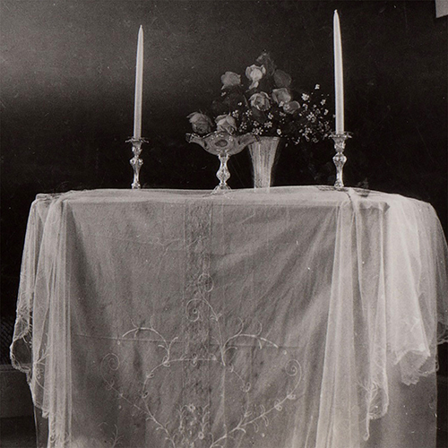

Since lately, Jerry Johansson now also allows himself to travel deeper and deeper into the magical sounds of the banjo, guitar and sitar. Banjo, this magical instrument, made up of five strings, and, through the ages, with close connections to both heaven and hell. But for the first time in history, Jerry really PLAYS the banjo as no one has ever done before! The music and sounds of Jerry is constantly expanding and overtly psychedelic in the very same instant. In short, The Inner Mountain Flame presents urban mountain music in the everpresent surroundings of now, 2020. It's all here, in the ongoing madness of our times. Deeply rooted in the "traditions" of Gabor Szabo, Robbie Basho, Sandy Bull, George Stavis and other luminaries, Jerry Johansson is wise enough not to succumb into an admoring "follower", but both tries and succeds in expanding this ongoing journey with his own, total imprint, signs, gestures and identity. But, of course, even good old Clarence Ashley is an distant relative. And, just as in the dream sleep, various themes, images and remembrances are closely tied together through the vibrant strings of eternity. As already stated, the banjo is a magical instrument, and Jerry Johansson is the magician choosen to show the way further!
| Mountain Flame - Songs | ||
|---|---|---|
| A1. | They turned over, staring down at the ground | (Guitar) |
| A2. | The compass was a source of constant enlightment | (Banjo) |
| A3. | The figure in the dark could very well have been myself | (Dulcimer) |
| A4. | A white, handwritten poster signalled the Second Enigma | (Guitar) |
| B1. | A moment of air transforming into gold | (Sitar) |
| B2. | Suddenly, things became more focused | (Banjo) |
| B3. | When I lifted my head, there was a valley underneath | (Banjo) |
| B4. | One hour before dawn, the red blink of wing lights through the mist outside | (Banjo and sitar) |